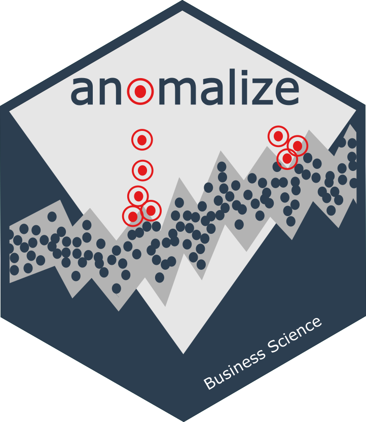

Changelog
Source:NEWS.md
anomalize 0.3.0
CRAN release: 2023-10-31
Prepare for supercession by timetk. Note that anomalize R package will be maintained for backwards compatibility. Users may wish to add these 2 lines of code to existing codebases that use the legacy anomalize R package:
library(anomalize)
anomalize <- anomalize::anomalize
plot_anomalies <- anomalize::plot_anomaliesanomalize 0.2.2
CRAN release: 2020-10-20
Bug Fixes
-
theme_tq(): Fix issues with%+replace%,theme_gray, andrelnot found.
anomalize 0.2.1
CRAN release: 2020-06-19
Bug Fixes
- Fix issue with sign error in GESD Method (Issue #46).
- Require
tibbletime>= 0.1.5
anomalize 0.2.0
CRAN release: 2019-09-21
clean_anomalies()- A new function to simplify cleaning anomalies by replacing with trend and seasonal components. This is useful in preparing data for forecasting.tidyrv1.0.0 andtibbletimev0.1.3 compatability - Improvements to incorporate the upgradedtidyrpackage.
anomalize 0.1.1
CRAN release: 2018-04-17
-
Issue #2: Bugfixes for various
ggplot2issues inplot_anomalies(). Solves “Error in FUN(X[[i]], …) : object ‘.group’ not found”. -
Issue #6: Bugfixes for invalid unary operator error in
plot_anomaly_decomposition(). Solves “Error in -x : invalid argument to unary operator”.